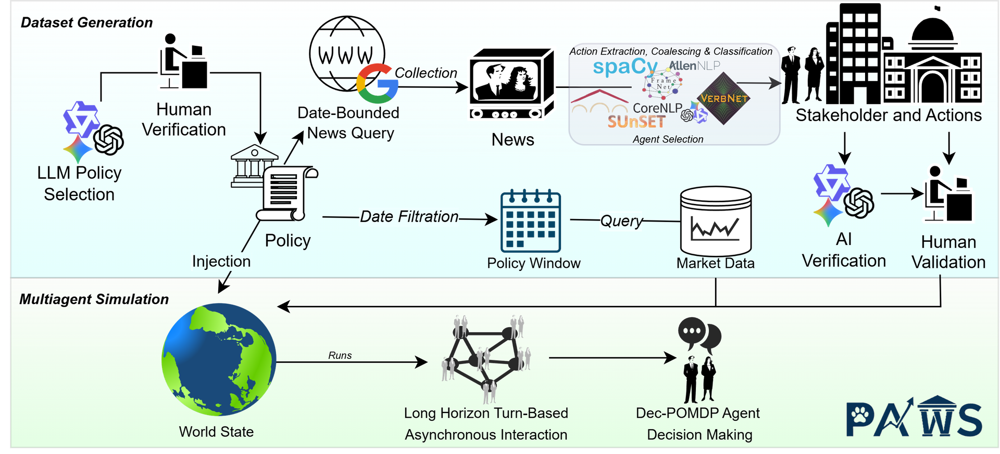
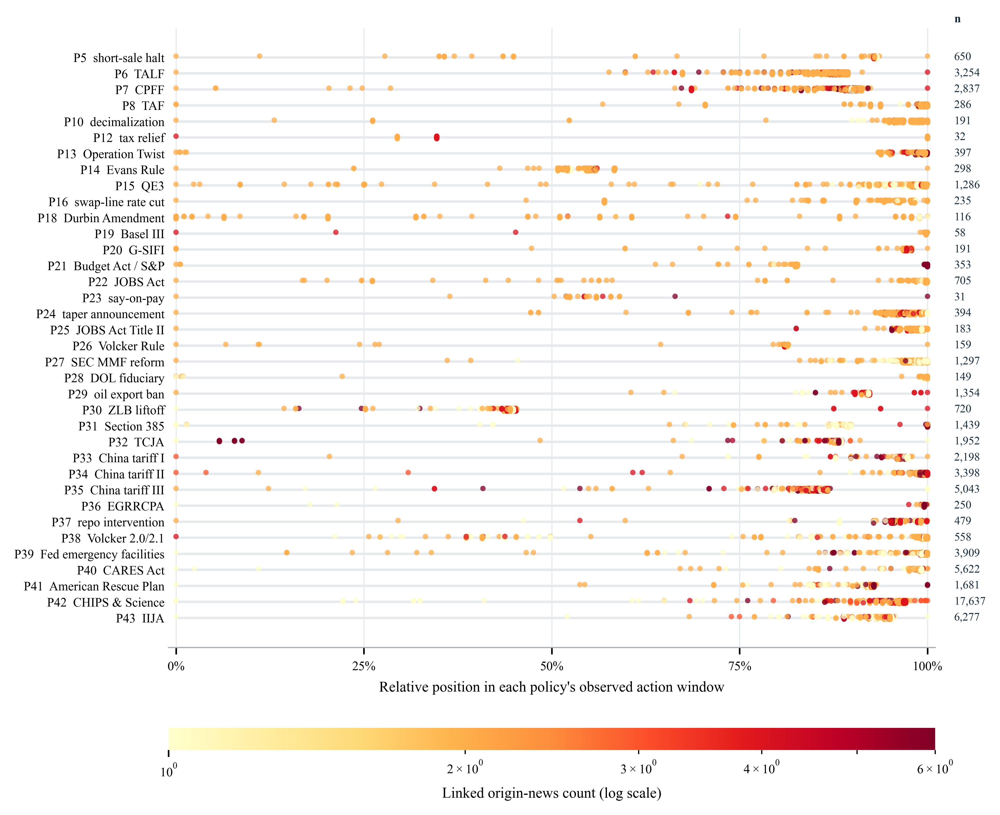

Research dataset · Preprint release
 Policy-driven Agentic World Simulation
Policy-driven Agentic World Simulation
A temporally grounded dataset for tracing how policies, news, institutions, and markets interact.
The Dataset download contains the sanitized public subset used by this website. For access to the full dataset, contact the corresponding author listed in the Information section.

PAWS connects policy interventions to dated evidence, structured stakeholder actions, and replay-ready world states.
01 · Introduction
From policy shock
to agent action.
PAWS is a policy-centred dataset for studying multi-agent behaviour in financial markets. It aligns verified policy episodes with policy-window news, normalized organizations, extracted actions, and daily market-return context.
Instead of treating news or prices as isolated signals, PAWS preserves the sequence: what changed, who responded, how they acted, and what the surrounding market looked like.
02 · Dataset overview
One auditable view of a policy episode.
Current database snapshot reported in the paper.
- Verified policy episodes
- 36 human-checked interventions
- Policy query keys
- 301 date-bounded retrieval paths
- Policy-linked news rows
- 12,727 provenance-preserving evidence
- Structured action rows
- 65,291 with corresponding event frames
CoverageFinancial & economic policy
Primary unitPolicy · actor · action · day
Dataset licenseGNU GPLv3
Release statusPreprint preview
03 · Visual overview
See the dataset from three angles.

Figure 04Policy action timeline
Relative action timing across verified policy episodes; color encodes each action's linked origin-news count.
Open full resolution ↗04 · Interactive playground
Inspect the chain of evidence.
Explore a sanitized public subset derived from the PAWS SQLite tables. Article bodies and raw event-frame payloads are not published here.
… published News + Action rows
Loading public database subset…The full SQLite database is never sent to the browser.
Interactive evidence map
Policy-normalized timeline
Every point keeps its real date. Horizontal position shows where it falls within the selected policy’s observed evidence window or documented policy window.
Position: 0% beginning · 100% end. Dense rows are evenly sampled here; every published row is searchable below.
Organizations & involvement
Who appears across policy episodes?
Ranked from all action rows linked to the policies in the public subset. Select an organization to compare its policy involvement and most frequent actions.
05 · Citation
Build on PAWS.
The formal paper citation will replace this preview entry when publication details are available.
BibTeX · preview
@misc{paws_dataset,
title = {PAWS: Policy-driven Agentic World Simulation},
author = {Sim, Tiviatis and Woon, Jia Hui and Gao, Xinming and Gao, Chen and Zhu, Fengbin and Zheng, Huanhuan and Seng, Chua Tat and Kawaguchi, Kenji},
note = {Pre-publication dataset; citation to be updated}
}